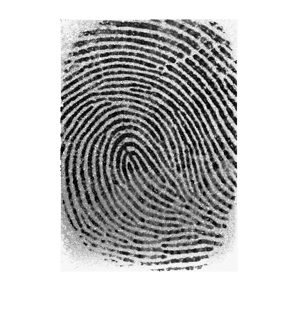
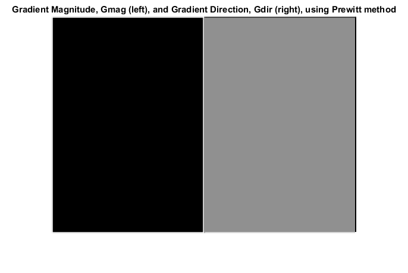

clear all
close all
clc
im = imread('1_1.tif');
N = 17;
imshow(im)
[l,c]=size(im);
imEq = histeq(im);
figure
imshow(imEq);
im=double(im);
im = im/255;
media = mean(mean(im));
variancia = var(var(im));
mediaDes = 0.7;
varDes = 0.5;
imNorm = ones(l,c);
l2 = floor(l/N);
c2 = floor(c/N);
for i=1:l2
for j=1:c2
media=mean(mean(im(N*(i-1)+1:N*i,N*(j-1)+1:N*j)));
variancia=var(var(im(N*(i-1)+1:N*i,N*(j-1)+1:N*j)));
for k=N*(i-1)+1:N*i
for w=N*(j-1)+1:N*j
if (variancia >0.01) && (variancia < 1)
if im(k,w) > media
imNorm(k,w) = mediaDes + sqrt( ((im(k,w)- media)^2)*(varDes/variancia) );
else
imNorm(k,w) = mediaDes - sqrt( ((im(k,w)- media)^2)*(varDes/variancia) );
end
end
end
end
end
end
imNorm = imNorm*255;
imNorm = filter2(1/9*ones(3,3),imNorm);
figure
imshow(imNorm);
[Gmag,Gdir] = imgradient(imNorm, 'prewitt');
figure; imshowpair(Gmag, Gdir, 'montage');
title('Gradient Magnitude, Gmag (left), and Gradient Direction, Gdir (right), using Prewitt method')
axis off;
return;
 